1. Instal·lació del sistema operatiu
He fet aquesta instal·lació dins d'una màquina virtual amb VirtualBox, amb Ubuntu 26.04 LTS. Un cop arrencat
el suport d'instal·lació, he seguit l'assistent i he triat les opcions de
particionat abans de continuar. Aquest pas és irreversible,
així que revisa bé el disc de destinació.
-
Crear la màquina virtual.
Nom
ubudesk26.04, carpeta /home/alumnat/VirtualBox VMs
i imatge ISO (baixada a la carpeta Baixades) ubuntu-26.04.1-desktop-amd64.iso.
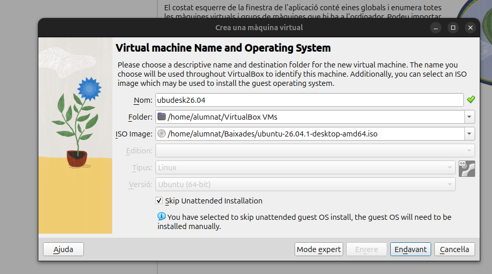
-
Creació del disc dur virtual.
Disc de 30 GB.
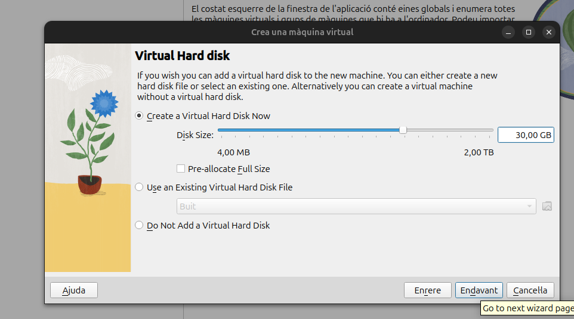
-
Configurar el particionat del disc.
Particions: / (10 GB), /home (15 GB) i /boot (2 GB).
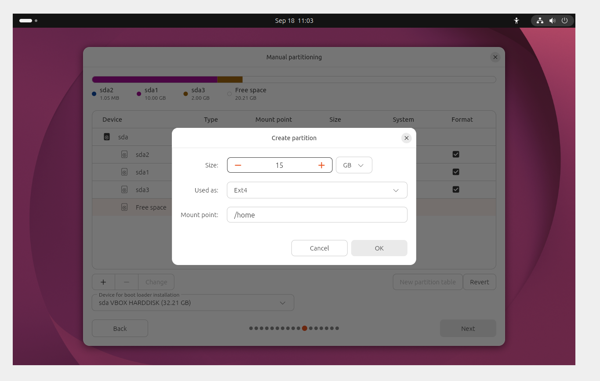
/home (15 GB): partició on es guarden els fitxers personals de l'usuari, separada del sistema.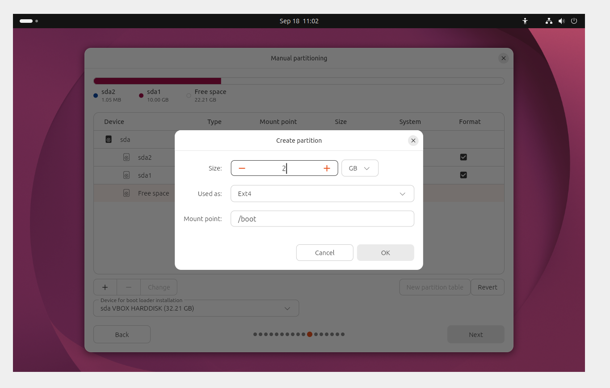
/boot (2 GB): partició on es guarden els fitxers d'arrencada, com el nucli i GRUB.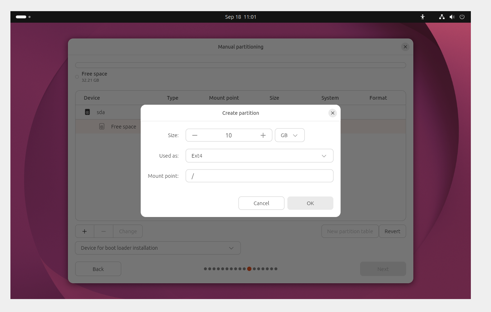
/ (10 GB): partició principal on s'instal·la el sistema operatiu i les aplicacions.
↑ Tornar a l'índex
2.Virtualització
Aquesta captura mostra la configuració de la màquina virtual a VirtualBox. S’ha assignat 6144 MB de memòria RAM, que és la memòria que la màquina virtual pot usar de l’ordinador real, i 3 processadors virtuals. Amb aquests recursos Ubuntu funciona sense afectar el sistema principal.
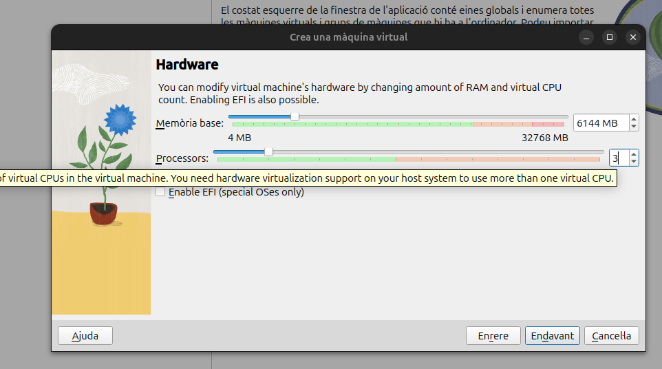
↑ Tornar a l'índex
3. Gestors arrencada
Un gestor d'arrencada és el programa que s'executa en encendre l'ordinador i permet triar quin sistema operatiu carregar. A Ubuntu és GRUB.
-
Primer vaig entrar a /boot i vaig esborrar la carpeta grub/ amb sudo rm -r grub/.
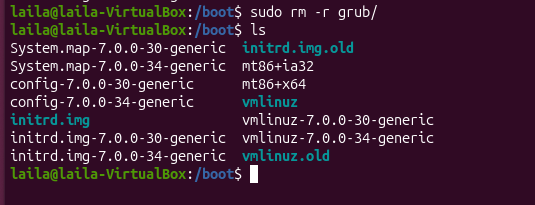
-
En reiniciar, la màquina no va arrencar i va mostrar l'error "normal.mod not found", amb el mode grub rescue>
-
Vaig intentar arrencar amb Super Grub2 Disk, connectant la seva ISO a la unitat òptica de VirtualBox. Des del seu menú no vaig poder arrencar el sistema.
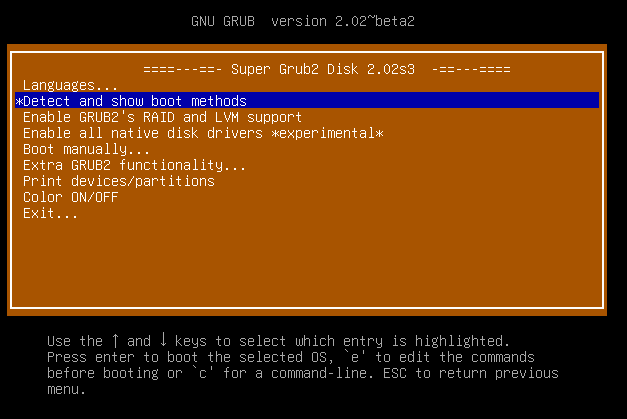
-
Per tant vaig fer ús del Boot Repair. Amb aquesta eina es va reparar l'arrencada.
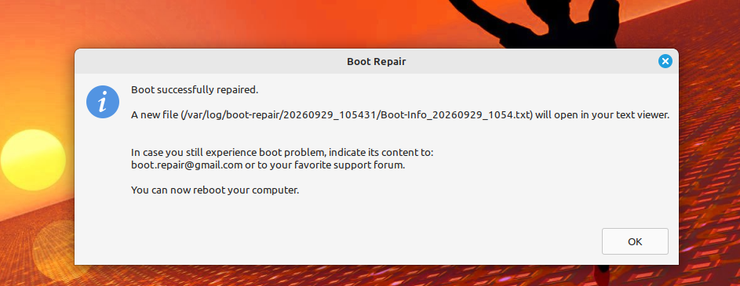
-
Per usar Boot Repair vaig connectar la seva ISO a la configuració de VirtualBox.
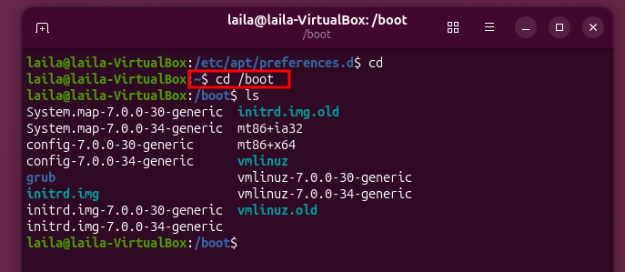
-
Un cop reparat, la màquina va arrencar fins a l'escriptori d'Ubuntu, i la carpeta grub torna a estar present a /boot.
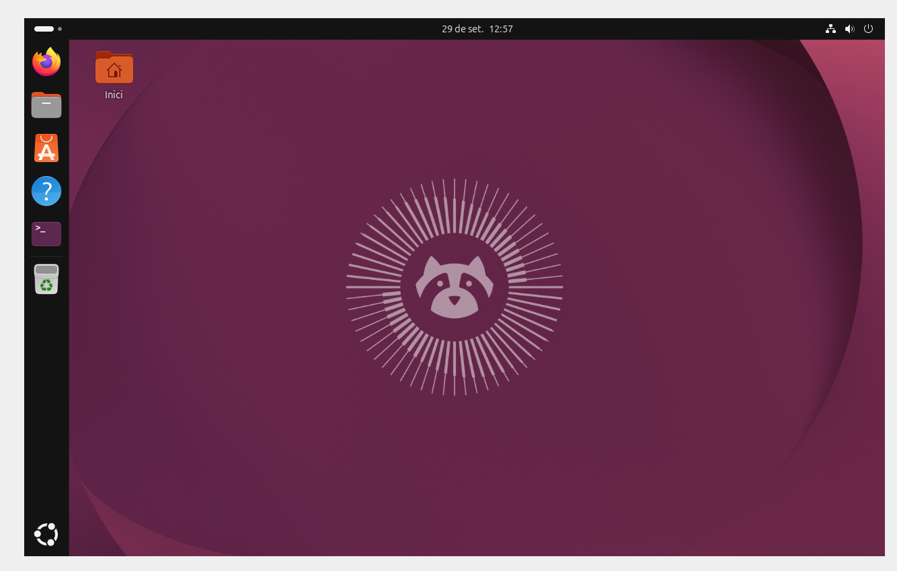
↑ Tornar a l'índex
4.Xarxa basicà
↑ Tornar a l'índex
5.Comandes generals
Les comandes generals són les ordres bàsiques de la terminal per navegar pel sistema i gestionar fitxers. Amb cd entro a un directori, amb ls veig el que hi ha, i amb cat o nano puc veure o editar un fitxer. Per instal·lar aplicacions faig servir apt, amb sudo quan cal permisos d’administrador.
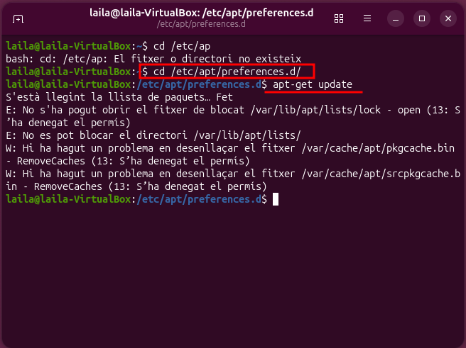
↑ Tornar a l'índex
6.Instal·lacions aplicacions

- Crear l'usuari amb
useradd.
- Assignar contrasenya amb
passwd.
- Afegir l'usuari als grups necessaris amb
usermod -aG.
↑ Tornar a l'índex